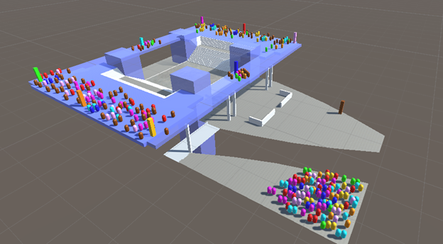
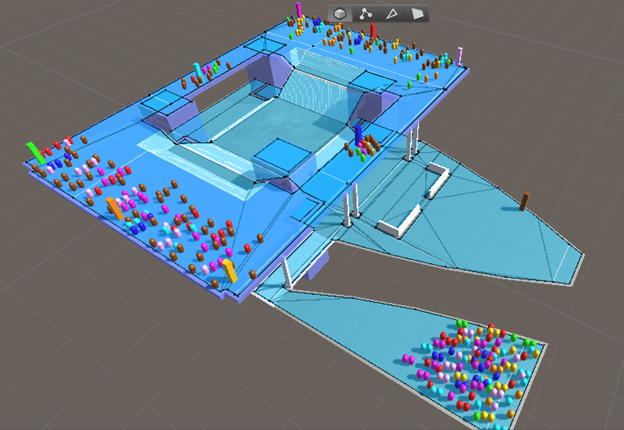
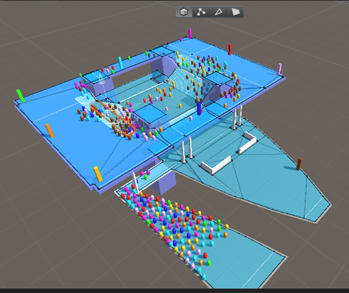
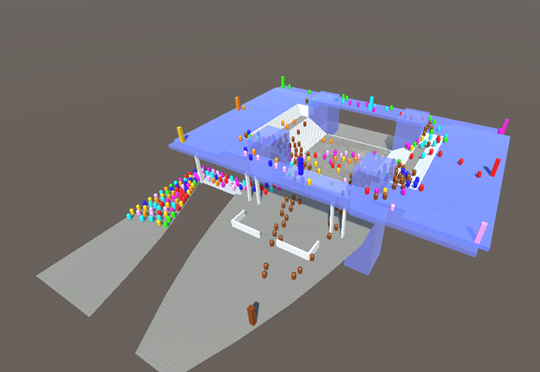
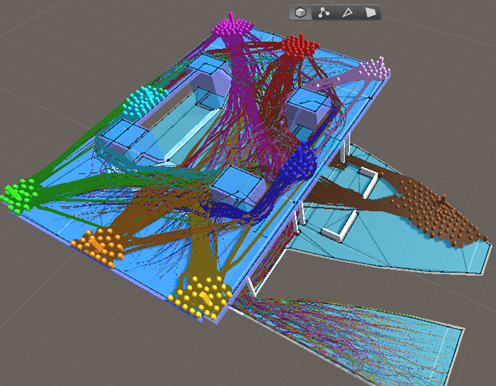
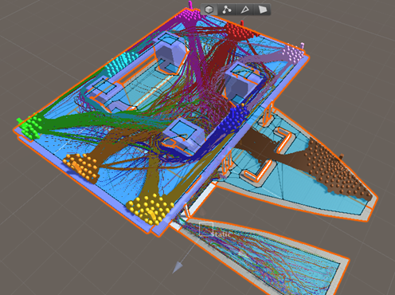

Simulating Pedestrian Flow in Unity Using a NavMesh
Simon Fraser University, 3D GIScience
March 2020

Project Description:
Using Unity, I simulated pedestrian flow around the transportation centre at Simon Fraser University. The area being studied has a high volume of pedestrians, as people move to/from the transit stops, as well as moving between different classes. Students are represented by "agents", which can navigate to their destination while avoiding collisions with other agents.
{kind=link}
The top level of the structure has 8 differently-colored destination markers, representing places that different students might want to go.
On the ground level, there is a brown destination marker that represents the pick-up bay for the bus stop.
Near the bottom of the image there is a crowd of students who just got off the bus, and are standing in the drop-off bay.
All of the "students" are colored by their destination. Note that none of the students who just got dropped off the bus are headed
for the pick-up bay, and none of the students are trying to go to the same side of the structure from which they came.

{kind=link}
This picture shows the NavMesh, representing the area that the students can move within.

{kind=link}
Screenshot of the simulation running.

{kind=link}
Screenshot of the simulation running with NavMesh turned off.

{kind=link}
Simulation running with color-differentiated trails.

{kind=link}
Simulation running with color-differentiated trails, with agent radius increased to 150% of the default. This simulates a situation in
which people prefer more personal space.
There are a few aspects of the agent's behavior that do not reflect real-world pedestrian behavior:
- Many of the agents crossing from one side of the top level to the other didn’t show any aversion to walking up or down stairs. In real life, many people would opt to take one of the side walkways to avoid going up or down stairs.
- Agents tended to take the straightest path to their destination without looking ahead. Real people might spot crowds from a distance and opt to take a less crowded path instead of taking a more direct, but crowded route.
- The NavMesh was set up assuming that students would only cross the road at designated crosswalks or crossing point. In reality, many people jaywalk.
- What individuals are able to see would impact their decisions. For example, people at the top of stairs could make more informed decisions about where to navigate than people turning around a blind corner.
Software Used:
- Unity